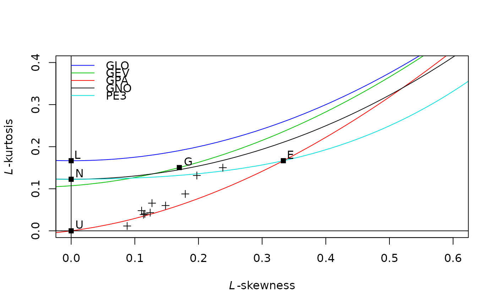
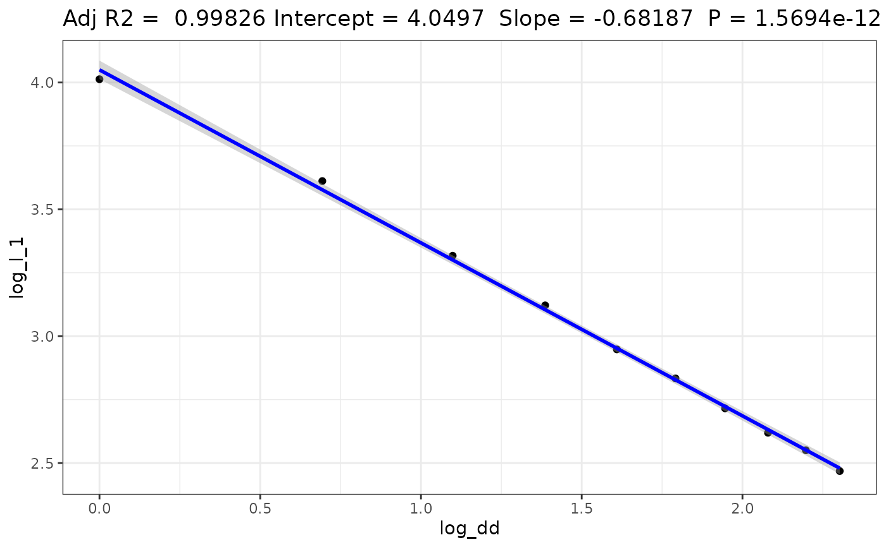
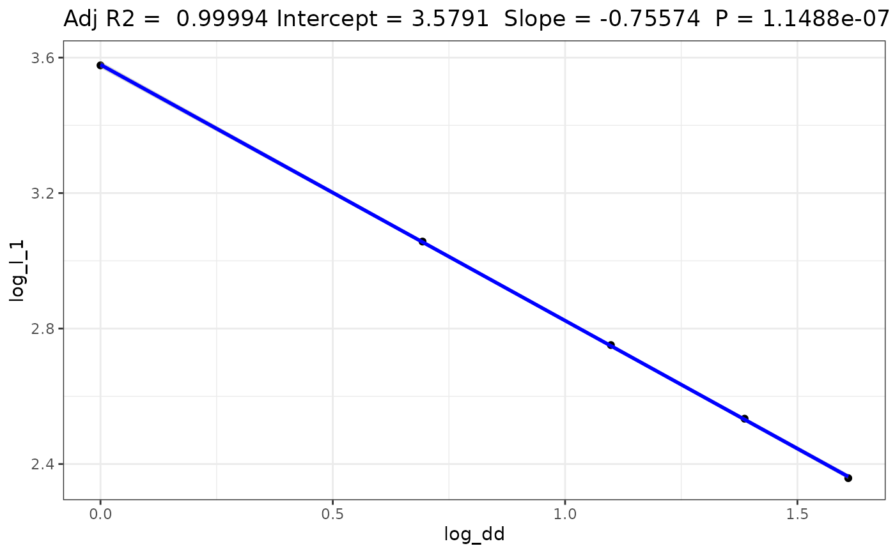
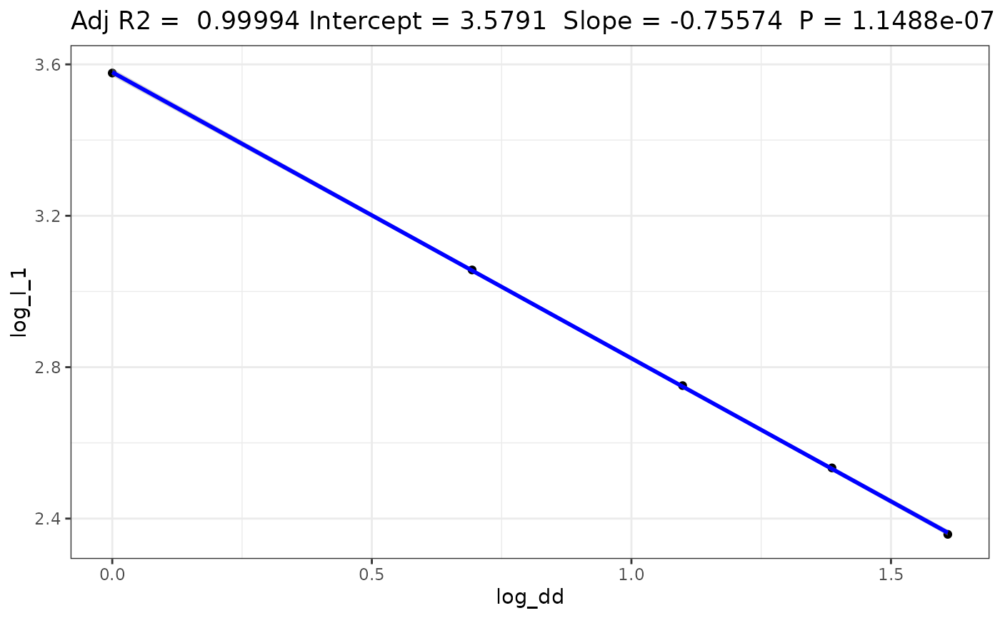

Sample L-Moments of annual maxima or minima values
annual.agg.samlmu.RdSample L-Moments of annual maxima or minima values
annual.agg.samlmu(
x,
aggr.name = "aggr",
dd.name = "dd",
dd_formatter = "%03d",
nn = names(x),
...
)
yearly.agg.samlmu(x, ...)Arguments
- x
object returned by
annual.aggoryearly.aggor a vector which will be processed throughvec2df- aggr.name, dd.name
optional column mane for
x. See function usage.- dd_formatter
argument used by
vec2df- nn
names of
x- ...
further arguments for
samlmu
Value
a data frame containing the L-moment of rainfall intensity for each duration category.
See also
Examples
library(RMAWGEN)
data(trentino)
time <- as.Date(sprintf("%04d-%02d-%02d",PRECIPITATION$year,
PRECIPITATION$month,PRECIPITATION$day),format="%Y-%m-%d")
x <- PRECIPITATION$B8570
y <- annual.agg(x,dd=1:10,time)
out <- annual.agg.samlmu(y)
y1 <- df2vec(y)
out1 <- annual.agg.samlmu(y1)
if (max(abs(out1-out),na.rm=TRUE)>1e-8) stop("Something went wrong!")
for (it in names(attributes(out))) {
if (!identical(attr(out,it),attr(out1,it))) {
msg <- sprintf("Something went wrong in %s!",it)
stop(msg)
}
}
lmrd(out)

log_l_1 <- log(out$l_1)
log_dd <- log(out$dd)
fit <- lm(log_l_1 ~ log_dd)
summary(fit)
#>
#> Call:
#> lm(formula = log_l_1 ~ log_dd)
#>
#> Residuals:
#> Min 1Q Median 3Q Max
#> -0.036883 -0.010238 -0.002789 0.013705 0.034347
#>
#> Coefficients:
#> Estimate Std. Error t value Pr(>|t|)
#> (Intercept) 4.049683 0.015782 256.60 < 2e-16 ***
#> log_dd -0.681868 0.009491 -71.84 1.57e-12 ***
#> ---
#> Signif. codes: 0 ‘***’ 0.001 ‘**’ 0.01 ‘*’ 0.05 ‘.’ 0.1 ‘ ’ 1
#>
#> Residual standard error: 0.02087 on 8 degrees of freedom
#> Multiple R-squared: 0.9985, Adjusted R-squared: 0.9983
#> F-statistic: 5161 on 1 and 8 DF, p-value: 1.569e-12
#>
library(ggplot2)
gg <- ggplot(fit$model, aes_string(x = names(fit$model)[2], y = names(fit$model)[1]))+
geom_point()+stat_smooth(method = "lm", col = "blue") +
labs(title = paste("Adj R2 = ",signif(summary(fit)$adj.r.squared, 5),
"Intercept =",signif(fit$coef[[1]],5 ),
" Slope =",signif(fit$coef[[2]], 5),
" P =",signif(summary(fit)$coef[2,4], 5)))
#> Warning: `aes_string()` was deprecated in ggplot2 3.0.0.
#> ℹ Please use tidy evaluation idioms with `aes()`.
#> ℹ See also `vignette("ggplot2-in-packages")` for more information.
##gg <- ggplot()+geom_point(aes(x=log(dd),y=log(l_1)),data=out)+theme_bw()
gg <- gg+theme_bw()
gg
#> `geom_smooth()` using formula = 'y ~ x'

## Case of a GSOD dataset time series
# \donttest{
library(GSODR)
library(magrittr)
library(data.table)
library(dplyr)
library(ggplot2)
set.seed(123)
years <- 1937:2020
gsod <- get_GSOD(years=years,station="623180-99999") ##ALEXANDRIA INTL EG 623180-99999
prec <- gsod %>% select(YEARMODA,PRCP,PRCP_ATTRIBUTES) %>%
mutate(YEARMODA=as.Date(YEARMODA,format="%Y-%m-%d"))
dds <- range(prec$YEARMODA)
## See GSODR documentation
yymmdds <- seq(from=dds[1],to=dds[2],by="day")
prec <- data.table::data.table(YEARMODA=yymmdds) %>% full_join(prec)
#> Joining with `by = join_by(YEARMODA)`
y <- annual.agg(x=prec$PRCP,dd=1:5,time=prec$YEARMODA)
#> Warning: There were 30 warnings in `summarize()`.
#> The first warning was:
#> ℹ In argument: `aggr = aggr.fun(.data$value, na.rm = na.rm)`.
#> ℹ In group 11: `dd = D001` and `index = "1967"`.
#> Caused by warning in `aggr.fun()`:
#> ! no non-missing arguments to max; returning -Inf
#> ℹ Run dplyr::last_dplyr_warnings() to see the 29 remaining warnings.
### y$aggr cannot be -Inf or +Inf
y$aggr[y$aggr==-Inf] <- NA
out <- annual.agg.samlmu(y)
lmrd(out)
 log_l_1 <- log(out$l_1)
log_dd <- log(out$dd)
fit <- lm(log_l_1 ~ log_dd)
summary(fit)
#>
#> Call:
#> lm(formula = log_l_1 ~ log_dd)
#>
#> Residuals:
#> 1 2 3 4 5
#> -0.002025 0.001598 0.002444 0.002452 -0.004469
#>
#> Coefficients:
#> Estimate Std. Error t value Pr(>|t|)
#> (Intercept) 3.579140 0.003143 1138.8 1.49e-09 ***
#> log_dd -0.755743 0.002823 -267.8 1.15e-07 ***
#> ---
#> Signif. codes: 0 ‘***’ 0.001 ‘**’ 0.01 ‘*’ 0.05 ‘.’ 0.1 ‘ ’ 1
#>
#> Residual standard error: 0.003587 on 3 degrees of freedom
#> Multiple R-squared: 1, Adjusted R-squared: 0.9999
#> F-statistic: 7.169e+04 on 1 and 3 DF, p-value: 1.149e-07
#>
ggg <- ggplot(fit$model, aes_string(x = names(fit$model)[2], y = names(fit$model)[1]))+
geom_point()+stat_smooth(method = "lm", col = "blue") +
labs(title = paste("Adj R2 = ",signif(summary(fit)$adj.r.squared, 5),
"Intercept =",signif(fit$coef[[1]],5 ),
" Slope =",signif(fit$coef[[2]], 5),
" P =",signif(summary(fit)$coef[2,4], 5)))
##gg <- ggplot()+geom_point(aes(x=log(dd),y=log(l_1)),data=out)+theme_bw()
ggg <- ggg+theme_bw()
ggg
#> `geom_smooth()` using formula = 'y ~ x'

# }
log_l_1 <- log(out$l_1)
log_dd <- log(out$dd)
fit <- lm(log_l_1 ~ log_dd)
summary(fit)
#>
#> Call:
#> lm(formula = log_l_1 ~ log_dd)
#>
#> Residuals:
#> 1 2 3 4 5
#> -0.002025 0.001598 0.002444 0.002452 -0.004469
#>
#> Coefficients:
#> Estimate Std. Error t value Pr(>|t|)
#> (Intercept) 3.579140 0.003143 1138.8 1.49e-09 ***
#> log_dd -0.755743 0.002823 -267.8 1.15e-07 ***
#> ---
#> Signif. codes: 0 ‘***’ 0.001 ‘**’ 0.01 ‘*’ 0.05 ‘.’ 0.1 ‘ ’ 1
#>
#> Residual standard error: 0.003587 on 3 degrees of freedom
#> Multiple R-squared: 1, Adjusted R-squared: 0.9999
#> F-statistic: 7.169e+04 on 1 and 3 DF, p-value: 1.149e-07
#>
ggg <- ggplot(fit$model, aes_string(x = names(fit$model)[2], y = names(fit$model)[1]))+
geom_point()+stat_smooth(method = "lm", col = "blue") +
labs(title = paste("Adj R2 = ",signif(summary(fit)$adj.r.squared, 5),
"Intercept =",signif(fit$coef[[1]],5 ),
" Slope =",signif(fit$coef[[2]], 5),
" P =",signif(summary(fit)$coef[2,4], 5)))
##gg <- ggplot()+geom_point(aes(x=log(dd),y=log(l_1)),data=out)+theme_bw()
ggg <- ggg+theme_bw()
ggg
#> `geom_smooth()` using formula = 'y ~ x'

# }